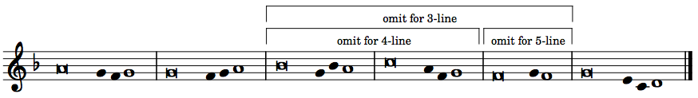
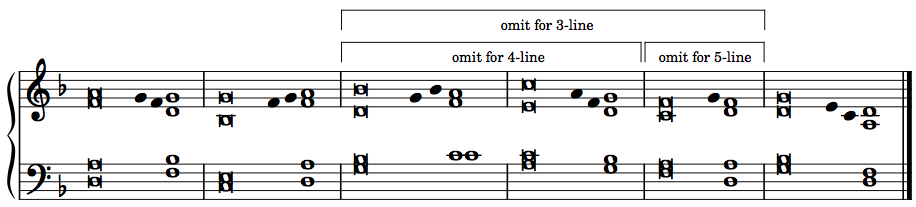

Appendix I: SEQUENCE FOR THE SOLEMNITY OF THE MOST HOLY BODY AND BLOOD OF CHRIST (ABC)
Second Sunday after Pentecost
According to the General Instruction of the Roman Missal, the Sequence, or the shorter form beginning with the verse Lo! the angel’s food is given, may optionally be chanted immediately following the Second Reading and before the Gospel Acclamation on the Solemnity of the Most Holy Body and Blood of Christ. It is not sung at the Saturday Vigil Mass.
Here, the official approved text, as found in the Lectionary, is put to a simple psalm tone arranged by M. Grossi (©2021). Both the full version and shorter option are included. A cantor version containing only the psalm melody is provided first, followed by an organ version with a suggested accompaniment arranged by M. Grossi (©2021).
Liturgical performance notes
- The chant tone contains six measures, some of which are omitted for stanzas containing fewer than six lines of text. The annotated melody is provided at the top of each page.
- The melody is simply repeated for each stanza in a fashion similar to the more-familiar singing of Responsorial Psalm verses. Liturgical musicians are advised to be keenly attentive to what tone measure coincides with each stanza, especially as the stanza structures evolve from three to four, to five, and finally to six lines.
- The use of italics font together with an accent symbol (´) indicates the textual syllable on which to move to the next note in the tone for each line. Everything preceding this annotated syllable is chanted on the first note of the measure. The musical timing of these sustained notes is arbitrary and should be determined entirely by the singing, which should be done in a smooth, chant-like fashion.
- The verses are arranged column-wise: Read down column one first, then the second column (verse 2 begins Bring him all…)
Click to download Laud, O Zion, the Sequence for Corpus Christi.
Laud, O Zion (Lauda Sion)
Cantor:

Organ:

Laud, O Zion, yóur salvation,
Laud with hymns of éxultation,
Christ, your king and shépherd true:
Bring him all the práise you know,
He is more than yóu bestow.
Never can you réach his due.
Special theme for glád thanksgiving
Is the quick’ning ánd the living
Bread today befóre you set:
From his hands of óld partaken,
As we know, by fáith unshaken,
Where the Twelve at súpper met.
Full and clear ring óut your chanting,
Joy nor sweetest gráce be wanting,
From your heart let práises burst:
For today the féast is holden,
When the institútion olden
Of that supper wás rehearsed.
Here the new law’s néw oblation,
By the new king’s révelation,
Ends the form of áncient rite:
Now the new the óld effaces,
Truth away the shádow chases,
Light dispels the glóom of night.
What he did at súpper seated,
Christ ordained to bé repeated,
His memorial nevér to cease:
And his rule for gúidance taking
Bread and wine we hállow, making
Thus our sacrifíce of peace.
This the truth each Chrístian learns,
Bread into his flésh he turns,
To his precious blóod the wine:
Sight has fail’d, nor thóught conceives,
But a dauntless fáith believes,
Resting on a pów’r divine.
Here beneath these sígns are hidden
Priceless things to sénse forbidden;
Signs, not things are áll we see:
Blood is poured and flésh is broken,
Yet in either wóndrous token
Christ entire we knów to be.
Whoso of this fóod partakes,
Does not rend the Lórd nor breaks;
Christ is whole to áll that taste:
Thousands are, as óne, receivers,
One, as thousands óf believers,
Eats of him who cánnot waste.
Bad and good the féast are sharing,
Of what divers dóoms preparing,
Endless death, or éndless life.
Life to these, to thóse damnation,
See how like partícipation
Is with unlike íssues rife.
When the sacramént is broken,
Doubt not, but belíeve ’tis spoken,
That each severed outwárd token
Doth the very whóle contain.
Nought the precious gíft divides,
Breaking but the sígn betides
Jesus still the same ábides,
Still unbroken dóes remain.
The shorter form of the Sequence begins here.
Lo! the angel’s fóod is given
To the pilgrim whó has striven;
See the children’s bread fróm heaven,
Which on dogs may nót be spent.
Truth the ancient týpes fulfilling,
Isaac bound, a víctim willing,
Paschal lamb, its lifeblóod spilling,
Manna to the fáthers sent.
Very bread, good shépherd, tend us,
Jesu, of your lóve befriend us,
You refresh us, yóu defend us,
Your eternal góodness send us
In the land of lífe to see.
You who all things cán and know,
Who on earth such fóod bestow,
Grant us with your sáints, though lowest,
Where the heav’nly féast you show,
Fellow heirs and guests tó be.
Amen. Alléluia.
✠ ✠ ✠